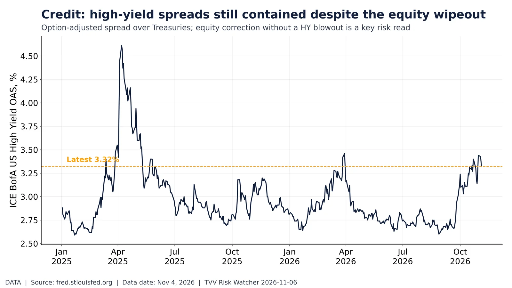
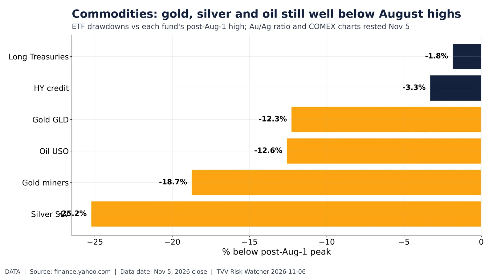
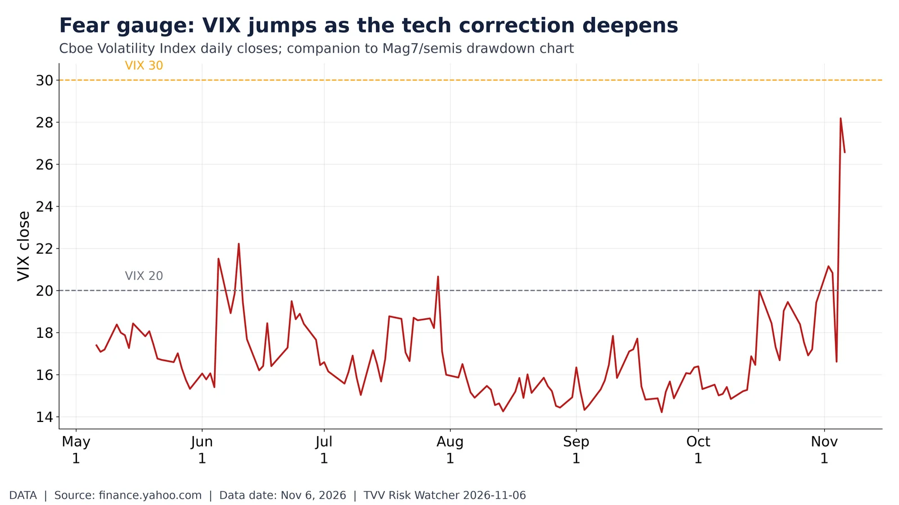
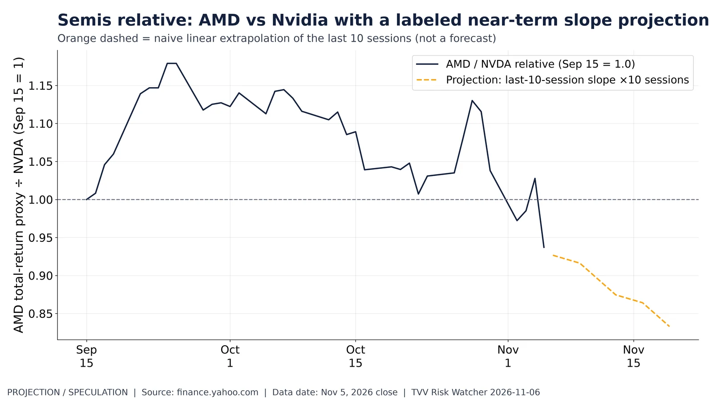
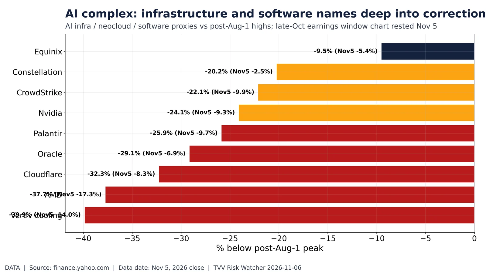
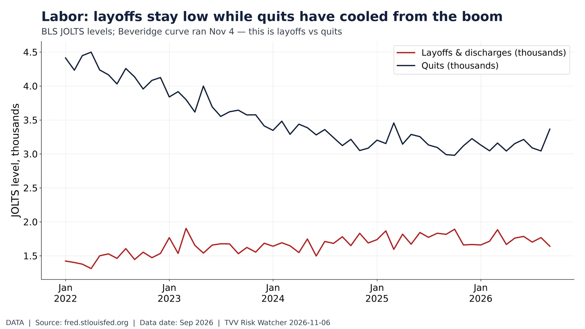

Space weather: GOES Hp magnetometer over the past week. GOES Hp 7-day range 19 to 137 nT; min at Oct 30 22:55 ET. NOAA SWPC, Nov 6, 2026 7:08 AM ET. Source: https://www.swpc.noaa.gov/products/goes-magnetometer
Data-center complex: deep drawdowns from summer/autumn peaks. From post-Aug-1 peaks: Vertiv -39.9%, Constellation -20.2%, Equinix -9.5%. Yahoo, Nov 5, 2026 close. Source: https://finance.yahoo.com/quote/VRT/

Credit: high-yield spreads still contained despite the equity wipeout. ICE BofA HY OAS 3.32% on Nov 4, 2026 (recent peak 3.44%). FRED BAMLH0A0HYM2. Source: https://fred.stlouisfed.org/series/BAMLH0A0HYM2
Early respiratory season: COVID, RSV and flu hosp rates side by side. CDC RESP-NET early 2026-27: COVID-NET 0.8, RSV-NET 0.1 per 100k (latest weeks). CDC, Oct 24, 2026. Source: https://www.cdc.gov/resp-net/dashboard/index.html

Commodities: gold, silver and oil still well below August highs. From post-Aug-1 peaks: GLD -12.3%, SLV -25.2%, USO -12.6%. Yahoo, Nov 5, 2026 close. Source: https://finance.yahoo.com/quote/GLD/
Correction check: tech and semis deep in the red after a dismal Nov 5. From peaks: SMH -29.4% (Nov5 -11.2%), QQQ -14.8% (-6.5%), SPY -5.9% (-4.4%). Yahoo close Nov 5, 2026 close. Source: https://finance.yahoo.com/quote/%5EGSPC/

Fear gauge: VIX jumps as the tech correction deepens. VIX last 26.6 on Nov 6, 2026; 6-mo high 28.2. Yahoo ^VIX / Cboe. Source: https://finance.yahoo.com/quote/%5EVIX/
Tech tape: Mag7 names indexed off their autumn peaks. From own post-Sep-15 peaks: NVDA -24.1%, QQQ -14.8% through Nov 5, 2026 close. Yahoo. Source: https://finance.yahoo.com/quote/NVDA/

Semis relative: AMD vs Nvidia with a labeled near-term slope projection. AMD/NVDA relative from Sep 15; last 0.94. Dashed orange = last-10-session slope extended 10 sessions. Yahoo, Nov 5, 2026 close. Source: https://finance.yahoo.com/quote/AMD/

AI complex: infrastructure and software names deep into correction territory. From peaks: Vertiv -39.9%, Oracle -29.1%, Nvidia -24.1%. Yahoo, Nov 5, 2026 close. Source: https://finance.yahoo.com/quote/VRT/

Labor: layoffs stay low while quits have cooled from the boom. JOLTS: layoffs 2k vs quits 3k (Sep 2026); layoffs/quits=0.49. FRED. Source: https://fred.stlouisfed.org/series/JTSLDL